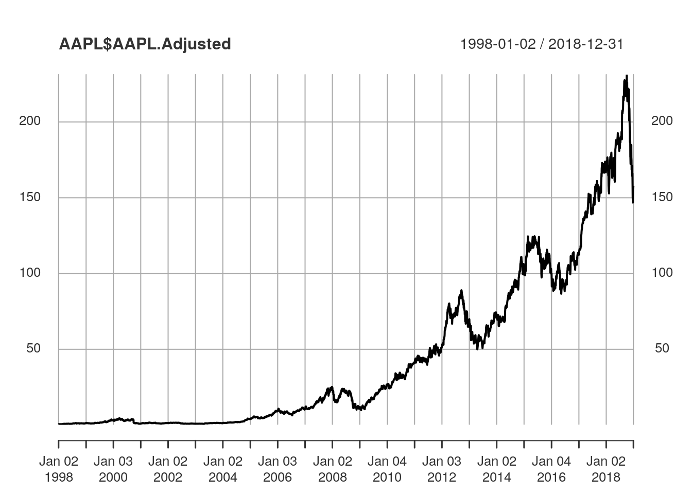

Chapter 1 I/O
In this Chapter, we will introduce basic functions to read text and excel files as well as large files. We will also show how to obtain free financial and economic data from sources such as Quandl, IEX and Alpha Vantage.
1.1 Reading and Writing
1.1.1 Text Files
The most basic and commonly used option to import data from text files in R is the use of the function read.table from the r-base. We can use this function to read text files with extensions such as .txt and .csv.
dat.table <- read.table(file = "<name of your file>.txt")
dat.csv <- read.csv(file = "<name of your file>.csv")The package readr provides functions for reading text data into R that are much faster that the functions from the r-base. The read_table function from the package readr provides a near-replacement for the read.table function.
library(readr)
dat.table <- readr::read_table2(file = "<name of your file>.txt")
dat.csv <- readr::read_csv(file = "<name of your file>.csv")Another option to save data is to write it in rds format. Data stored in rds format has the advantage to keep the original data struture and type of the object saved. Also, .rds files are compressed and consume less space than files saved in .csv format. A data.frame object can be saved in rds format and then loaded back as follows:
write_rds(dat.frame, path = "<name of your file>.rds")
dat.frame <- read_rds(path = "<name of your file>.rds")1.1.2 Excel Files
The package readxl has an ease to use interface to functions that load excel documents in R. The functions read_xls and read_xlsx can be used to read excel files as follows:
library(readxl)
readxl::read_xls(path = "<name of your file>.xls")
readxl::read_xlsx(path = "<name of your file>.xlsx")The function read_excel() automatically detects the extension of the input file as follows:
readxl::read_excel("<name and extension of your file>", sheet = "<sheet name or index>")In the read_excel function, the sheet argument can receive either the target sheet name or index number, where sheet indexing starts at 1.
The readxl has been oberving increased use compared to other comparable packages such as gdata and the xlsx due to its relative ease of use and performance. Also, the readxl do not have depency with external code libraries while the packages gdata and xlsx depend on ActiveState PERL and the Java JDK, respectively.
1.1.3 Large Files
Fast data manipulation in a short and flexible syntax.
1.2 Data Sources
In this section, we will show how to obtain financial and economic data from public sources.
1.2.1 Alpha Vantage
Alpha Vantage offers free access to pricing data including:
- Stock Time Series Data;
- Physical and Digital/Crypto Currencies (e.g., Bitcoin);
- Technical Indicators and
- Sector Performances.
The data are available in JSON and CSV formats via REST APIs. The quantmod and the alphavantager R packages offer a lightweight R interface to the Alpha Vantage API. Daily stock prices can be obtained with the quantmod::getSymbols function as follows:
getSymbols(Symbols='AAPL', src="av", output.size="full", adjusted=TRUE, api.key='your API key')The output data is stored in an object with the same name as the corresponding symbol, in this example AAPL. The output data looks like the following
| AAPL.Open | AAPL.High | AAPL.Low | AAPL.Close | AAPL.Volume | AAPL.Adjusted |
|---|---|---|---|---|---|
| 13.6 | 16.2 | 13.5 | 16.2 | 6411700 | 0.512 |
| 16.5 | 16.6 | 15.2 | 15.9 | 5820300 | 0.501 |
| 15.9 | 20.0 | 14.8 | 18.9 | 16182800 | 0.597 |
| 18.8 | 19.0 | 17.3 | 17.5 | 9300200 | 0.552 |
| 17.4 | 18.6 | 16.9 | 18.2 | 6910900 | 0.574 |
| 18.1 | 19.4 | 17.5 | 18.2 | 7915600 | 0.574 |

We called the quantmod::getSymbols function with the following arguments:
Symbols='AAPL'defines a character vector specifying the names of each symbol to be loaded, here specified by the symbol of the company Apple Inc.;src="av"specifies the sourcing method, here defined with the value corresponding to Alpha Vantage;output.size="full"specified length of the time series returned. The stringscompactandfullare accepted with the following specifications:compactreturns only the latest 100 data points;fullreturns the full-length time series of up to 20 years of historical data;adjusted=TRUEdefines a boolean variable to include a column of closing prices adjusted for dividends and splits;api.keyspecifies your Alpha Vantage API key.
1.2.2 IEX
The IEX Group operates the Investors Exchange (IEX), a stock exchange for U.S. equities that is built for investors and companies. IEX offers U.S. reference and market data including end-of-day and intraday pricing data. IEX offers an API with “a set of services designed for developers and engineers. It can be used to build high-quality apps and services”. Data sourced from the IEX API is freely available for commercial subject to conditions and the use of their API is subject to additional terms of use.
IEX lists the following github project as an unofficial API for R: https://github.com/imanuelcostigan/iex. We will provide examples on how to obtain intraday pricing data using this package. First, we will use the devtools to install the package directly from its github repository as follows:
library(devtools)
install_github("imanuelcostigan/iex")The iex package provides 4 set of functions as follows:
last: Provides IEX near real time last sale price, size and time. Last is ideal for developers that need a lightweight stock quote. IEX API real time API documentation.market: Provides exchange trade volume data in near real time. IEX market API documentation.stats: A set of functions that return trading statistics. IEX stats API documentation.tops: Provides IEX’s aggregated bid and offer position in near real time for all securities on IEX’s displayed limit order book. IEX API TOPS documentation.
For instance, the last function has the following arguments:
symbols: A vector of tickers (case insensitive). Special characters will be escaped. A list of eligible symbols is published daily by the IEX. When set toNULL(default) returns values for all symbols.fields: A vector of fields names to return (case sensitive). When set toNULL(default) returns values for all fields.version: The API version number, which is used to define the API URL.
We can obtain intraday stock price data with the last function as follows:
dat <- iex::last(symbols = c("AAPL"), fields = c("symbol", "price", "size")) The function returns an S3 object of class iex_api which has three accessible fields: path , response and content.
- The
pathcontains the corresponding IEX API path:
dat$path## [1] "tops/last"- The
responsecontains the unparsed IEX API response:
dat$response## Response [https://api.iextrading.com/1.0/tops/last?symbols=AAPL&filter=symbol%2Cprice%2Csize]
## Date: 2019-01-07 02:50
## Status: 200
## Content-Type: application/json; charset=utf-8
## Size: 45 B- The
contentcontains the parsed content from the API’s response:
dat$content## [[1]]
## [[1]]$symbol
## [1] "AAPL"
##
## [[1]]$price
## [1] 148
##
## [[1]]$size
## [1] 100According to the developer, this package causes R to pause 0.2 seconds after executing an API call to avoid the user being throttled by the IEX API (which enforces a 5 request per second limit). Documentation about the other set of functions can be obtained at https://github.com/imanuelcostigan/iex/tree/master/man.
1.2.3 Quandl
1.3 Conclusion
- We showed how to load and import data from both local files and external sources.
- We provided examples on how to read tabular data and how to handle large files.
- We showed how to obtain financial and economic data from freely available sources.
1.3.1 Key Packages Used
- Importing Flat Files
- readr and data.table
- Obtaining Financial Data
- quantmod, imanuelcostigan/iex and quandl
1.3.2 Further Reading
To further learn how to use R to load, transform, visualize and model data see (Wickham and Grolemund 2017). Additional relevant R packages include:
- dplyr: Fast data frames manipulation and database query.
- reshape2: Flexibly rearrange, reshape and aggregate data.
- readr: A fast and friendly way to read tabular data into R.
- tidyr: Easily tidy data with spread and gather functions.
- rlist: A toolbox for non-tabular data manipulation with lists.
- jsonlite: A robust and quick way to parse JSON files in R.
- ff: Data structures designed to store large datasets.
- lubridate: A set of functions to work with dates and times.
References
Wickham, Hadley, and Garrett Grolemund. 2017. R for Data Science: Import, Tidy, Transform, Visualize, and Model Data. 1st ed. O’Reilly Media, Inc.